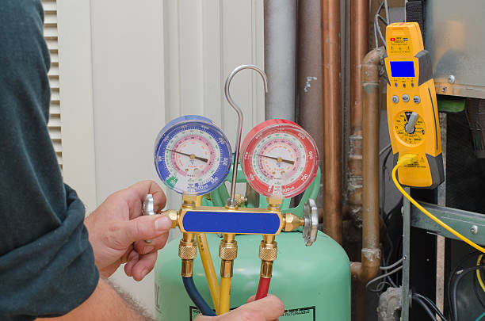

Highland Park New Jersey
info@gaineshvaccontractor.pro
Highland Park New Jersey
info@gaineshvaccontractor.pro

Get trusted HVAC repair and installation services in Highland Park New Jersey . Our experienced technicians offer customized heating and cooling solutions, ensuring your comfort through every season.
Click Here To Call Us (877) 848-1711When it comes to maintaining a comfortable environment in your home or business, you need an HVAC contractor you can rely on. At , we specialize in providing top-tier heating, ventilation, and air conditioning services across Highland Park New Jersey . Whether you need a quick repair, a new system installation, or routine maintenance, our skilled technicians are here to ensure your HVAC systems perform at their best year-round.
Why Choose Us for Your HVAC Needs?
We offer comprehensive HVAC solutions designed to increase your comfort and reduce energy costs. With years of experience, our certified experts provide fast and efficient service, ensuring your system runs smoothly and efficiently. Our HVAC services include:
AC Repairs and Installations: Keep your space cool during hot Highland Park New Jersey summers with our fast and reliable air conditioning services.
Heating Solutions: From furnaces to heat pumps, we ensure your heating system works flawlessly, keeping your space cozy through the winter.
Routine Maintenance: Regular tune-ups to extend the lifespan of your HVAC system and improve its efficiency.
Trust for all your HVAC needs in Highland Park New Jersey . Contact us today to schedule an appointment!
Residential & commercial HVAC Contractor
Quality services at affordable prices
Immediate 24/ 7 emergency services


Looking for reliable HVAC repair and maintenance services in Highland Park New Jersey ? Look no further! At HVAC Contractor, we specialize in providing top-notch heating, ventilation, and air conditioning (HVAC) solutions tailored to meet the needs of homeowners and businesses throughout Highland Park New Jersey .
Our team of certified technicians is committed to delivering exceptional service, ensuring your HVAC system runs efficiently year-round. Whether you need a quick repair, routine maintenance, or a full system installation, we have you covered. We use state-of-the-art equipment and the latest techniques to handle a wide range of HVAC issues, from malfunctioning air conditioners to furnace repairs.
Why choose us for your HVAC needs in Highland Park New Jersey ?
Expert Technicians: Our team is highly trained and experienced in servicing all types of HVAC systems. We stay updated with the latest industry trends to provide you with the best solutions.
24/7 Availability: HVAC emergencies don’t happen at convenient times, which is why we offer 24/7 emergency services. We’re always here when you need us.
Affordable Services: We believe in transparent pricing with no hidden fees. You’ll get high-quality HVAC repair and maintenance at a price you can afford.
Customer Satisfaction: We take pride in our work and strive for 100% customer satisfaction. Our goal is to keep your home or business comfortable all year long.
If you’re in Highland Park New Jersey and looking for trusted HVAC repair and maintenance services, contact us today for a free consultation!
Residential & commercial HVAC Contractor
Quality services at affordable prices
Immediate 24/ 7 emergency services
A reliable central air conditioning system is a must for ensuring your home remains cool and comfortable during those hot summer months. At HVAC Contractor, we specialize in the installation and maintenance of **central air conditioning systems** providing homeowners with effective cooling solutions tailored to their specific needs.
Central air conditioning works by distributing cool air throughout your home via a system of ducts, ensuring even temperature control in every room. Our experienced technicians guide you through the process of selecting the right equipment based on your home’s size and cooling requirements. We only install high-efficiency units from trusted manufacturers, ensuring you receive not just quality, but also energy-saving capabilities.
In addition to installation, we offer comprehensive repair and maintenance services. Regular maintenance is vital in preventing unexpected breakdowns and ensuring your system operates efficiently. Our team is committed to providing exceptional service, whether you require seasonal check-ups or emergency repairs.
For **central air conditioning systems** in Highland Park New Jersey trust HVAC Contractor to deliver effective solutions and keep your home comfortably cool throughout the summer.

Boilers are a traditional yet efficient heating option for many homes and commercial buildings. At HVAC Contractor, we specialize in boiler installation and repair services in Highland Park New Jersey ensuring that your space stays warm and comfortable throughout the colder months.
Our comprehensive boiler services begin with a thorough assessment of your heating needs. We take into account factors such as the size of your property, heating preferences, and budget constraints. We offer a range of high-efficiency boilers that deliver reliable heat while minimizing energy costs.
Installation is handled by our certified technicians, who are trained to work with various types of boilers. We ensure that each installation meets all safety standards and is tailored for optimal efficiency. You'll also receive guidance on how to operate and maintain your new boiler, ensuring you get the most out of your investment.
Should your boiler experience issues, our expert repair services are readily available. Our technicians are equipped to diagnose and resolve a broad spectrum of boiler problems, restoring your heat promptly and effectively. We prioritize minimizing downtime to keep you comfortable.
Regular maintenance is crucial for preventing unexpected boiler breakdowns. Our maintenance plans include routine inspections and necessary adjustments, ensuring that your boiler operates efficiently throughout its lifespan. This proactive approach also saves you money on potential repairs.
At HVAC Contractor, we are committed to providing the residents and businesses of Highland Park New Jersey with reliable boiler installation and repair services. If you're in need of expert boiler services, contact us today and let our professionals enhance your heating system's performance.

Zoned HVAC systems represent a modern approach to home heating and cooling, allowing you to control temperatures in different areas of your home independently. Our zoned HVAC system installation services are designed to enhance your comfort and improve energy efficiency.
Our expert team will assess your home and determine the layout that best suits a zoned system. We guide you in selecting the right components for installation, ensuring every zone of your home gets the ideal temperature tailored to your preferences.
With a zoned system, you can enjoy significant energy savings, as you only heat or cool the areas you use. This targeted approach not only enhances comfort but also leads to reduced energy costs over time.
Furthermore, if you require repairs or maintenance for your existing zoned system, our technicians are well-equipped to handle any issues promptly and efficiently. Choose us for your zoned HVAC system installation for a customized solution that meets your family’s needs while maximizing efficiency and comfort.

Understanding your HVAC system’s efficiency starts with a comprehensive energy audit. Our HVAC energy audit and optimization services help you identify inefficiencies and recommend solutions to improve your system's performance, ultimately lowering your energy bills.
During the audit, our trained professionals will assess your HVAC system, insulation, and overall energy usage. We will pinpoint areas of energy loss and discuss potential upgrades or modifications to improve efficiency.
Moreover, we provide personalized optimization strategies, allowing you to take actionable steps toward making your HVAC system more efficient. This may include recommendations for system upgrades, maintenance schedules, or energy-efficient technologies that can further reduce consumption.
Investing in our HVAC energy audit and optimization services in Highland Park New Jersey is a proactive approach to enhancing your home’s comfort while ensuring that you’re operating at peak efficiency. Choose us for expert guidance and actionable insights that lead to long-term savings.

Proper ventilation is critical to maintaining a healthy indoor environment. At HVAC Contractor, we specialize in Ventilation System Installation and Repair, ensuring your home has proper airflow for optimal air quality and comfort.
Our experienced team evaluates your needs and designs a system tailored to improve indoor air circulation while eliminating pollutants. Our repair services ensure that existing systems operate effectively, and we prioritize your comfort and health. Choose us for our dedication to providing clean, fresh air in every corner of your home .
Efficient and reliable refrigeration systems are crucial for the success of various businesses, from restaurants to grocery stores. At HVAC Contractor, we specialize in refrigeration system installation, repair, and maintenance, providing tailored solutions that ensure your products remain fresh and your operations run smoothly .
Our team understands that every business has unique refrigeration needs. We conduct detailed assessments of your specific operations to recommend the most effective systems for your requirements, whether that be commercial refrigerators, freezers, or specialized refrigeration solutions.
When it comes to installation, our skilled technicians ensure that refrigerants and other essential components are set up correctly, adhering to all industry standards and regulations. We utilize the latest technology and equipment to ensure optimal performance and energy efficiency, which translates into cost savings for your business.
In addition to installation, we offer ongoing maintenance and repair services for your refrigeration systems. Prompt repairs are critical to preventing the loss of perishable goods and ensuring your business remains operational. Our team is available to address any refrigeration issues swiftly and effectively, minimizing downtime.
Furthermore, we emphasize the importance of regular maintenance to extend the lifespan of your refrigeration equipment. Our maintenance plans include thorough inspections and preventive measures to keep your systems running optimally.
At HVAC Contractor, we are committed to providing reliable refrigeration systems and exceptional service to businesses in Highland Park New Jersey . Contact us today to discuss your refrigeration needs and discover how we can support your business with efficient solutions.

Carbon monoxide is a colorless, odorless gas that poses serious health risks if not detected promptly. Our carbon monoxide testing and detection services are vital for ensuring the safety of your home or business. We provide comprehensive assessments and installation of advanced detection systems to keep you protected.
Our trained professionals will perform thorough inspections to identify potential sources of carbon monoxide in your property. This includes examining appliances, heating systems, and flue vents to ensure they are working safely and efficiently.
In addition to testing, we also offer expert advice on the installation of carbon monoxide detectors. Our team will guide you in selecting the right detection systems for your space, ensuring they are strategically placed for maximum effectiveness.
By choosing our carbon monoxide testing and detection services in Highland Park New Jersey you prioritize the safety of yourself and your family. Trust our expertise to provide the assessment and solutions you need to breathe easy in your home or business.

At HVAC Contractor, we understand that HVAC issues can occur at any time, day or night, which is why we offer 24/7 HVAC services . Our commitment to providing prompt, reliable service means you can count on us for any heating, cooling, or ventilation emergencies at any hour.
Our experienced technicians are always ready to respond to your HVAC emergencies. Whether you're facing a complete system breakdown, unusual noises, or inconsistent temperatures, you can trust our team to diagnose and resolve the issue quickly. We prioritize rapid response times to ensure your comfort is restored as soon as possible.
We also offer preventive maintenance services that can help reduce the likelihood of unexpected HVAC failures. Regular check-ups and maintenance can identify potential problems early, preventing costly repairs in the future. With our flexible maintenance plans, you can schedule visits at your convenience and ensure your systems are always in peak condition.
No matter what time of day or night you require HVAC assistance, HVAC Contractor is just a phone call away. Our dedication to customer satisfaction and high-quality service has made us a trusted choice for HVAC solutions .
If you’re experiencing HVAC issues or have questions about our services, don’t hesitate to contact us anytime. We are here to ensure your comfort and satisfaction with 24/7 HVAC services.
Years Experience
Expert Technicians
Satisfied Clients
Compleate Projects
At Gaines HVAC Contractor, we are your trusted partner for all heating, ventilation, and air conditioning needs in Highland Park New Jersey . Our team of skilled technicians is committed to delivering high-quality, reliable HVAC solutions that enhance your comfort and energy efficiency. Whether you need installation, repair, or maintenance services, we have the expertise to handle any project with precision and care.
What sets us apart is our unwavering dedication to customer satisfaction. We understand that every home and business in Highland Park New Jersey has unique heating and cooling needs. That’s why we provide personalized, cost-effective solutions tailored to your specific requirements. Our technicians use the latest tools and techniques to ensure every job is completed to the highest standards, keeping your indoor environment comfortable year-round.
As a locally owned and operated business, we take pride in being part of the Highland Park New Jersey community. We value your time and always strive to arrive on schedule, minimizing any disruption to your daily life. Our transparent pricing ensures that you receive the best value for your investment without any hidden fees.
Choose Gaines HVAC Contractor for exceptional service, unmatched expertise, and peace of mind. Our commitment to excellence makes us the go-to HVAC contractor in Highland Park New Jersey for residential and commercial clients alike. Contact us today to experience the difference we can make for your home or business.
In today's world, ensuring your home maintains a comfortable temperature year-round is a necessity. Here at HVAC Contractor, we specialize in residential HVAC installation, bringing you bespoke heating, ventilation, and air conditioning solutions tailored for your home. Our experienced team knows that every household has unique needs, which is why we focus on understanding your preferences, budget constraints, and energy usage habits before recommending the perfect system.
When you choose us for your residential HVAC installation, you’re not just getting a quick fix; you’re investing in a system built for long-term performance. Our certified technicians utilize advanced techniques and exhaustive testing to ensure optimal installation. We offer a wide range of options—including central air conditioning systems, ductless mini-split systems, and energy-efficient HVAC solutions—to cater to all types of homes, ensuring you enjoy the perfect indoor climate.
Moreover, our commitment to sustainable practices means that we are not just focused on comfort; we are also dedicated to improving your home’s energy efficiency. Our energy-efficient HVAC solutions are designed to reduce electricity bills and minimize your carbon footprint without sacrificing comfort. Our systems come equipped with modern technology, such as smart thermostats that allow you complete control at your fingertips.
In addition, maintenance and customer service are at the core of what we do. We provide detailed follow-up and recommend comprehensive HVAC maintenance plans to ensure your new system runs smoothly for years to come. With us, you’ll experience peace of mind knowing your investment is protected, and you’ll be greeted by a dedicated team that puts customer satisfaction above all.
If you're ready to elevate your home’s comfort while increasing its energy efficiency, contact HVAC Contractor today for a free consultation. Discover why we are the best choice for residential HVAC installation .
In the heart of any thriving business lies a commitment to providing a comfortable working environment for employees and clients alike. At HVAC Contractor, we understand that commercial HVAC systems are critical for maintaining productivity and safety in your business operations. With years of experience serving various industries our expertise covers a wide range of commercial HVAC services that address your specific needs.
Our approach begins with a detailed assessment of your commercial space and your current HVAC systems. We’ll work with you to determine the best HVAC solutions that not only meet your comfort requirements but also align with your operational goals. Whether you require installation, regular maintenance, or emergency repairs, our team of certified professionals is ready to support you 24/7.
We pride ourselves on offering energy-efficient HVAC solutions tailored specifically for commercial buildings. By implementing advanced engineering practices and the latest technology, we help our clients reduce energy consumption while simultaneously improving the indoor climate. Our systems offer state-of-the-art features like smart thermostats and automated systems, allowing you to manage your energy usage more effectively.
Customer satisfaction is our top priority, which is why we provide personalized service from start to finish. We’ll keep you informed at every step of the process, ensuring that your expectations are not only met but exceeded. Our skilled professionals are trained to perform installations and repairs with precision, minimizing downtime and disruption to your business.
At HVAC Contractor, we also offer preventive maintenance services, ensuring your HVAC systems are running efficiently and helping to prevent costly repairs down the road. When it comes to commercial HVAC services in Highland Park New Jersey trust us to be your reliable partner. Get in touch today to discuss how we can help keep your business comfortable and productive!
Every homeowner knows that when HVAC systems break down, it can be a real inconvenience and often leads to further issues. That’s where HVAC Contractor comes in with our specialized HVAC System Repairs. With a reputation built on trust and efficacy, we ensure that your system is restored to optimal performance in no time.
Our trained repair specialists are committed to diagnosing and resolving issues quickly and effectively, minimizing downtime and inconvenience. We use state-of-the-art diagnostic tools to pinpoint problems, ensuring you receive a detailed explanation of required repairs alongside options for energy-efficient solutions. Choose us for our dedication to fast, friendly service that prioritizes customer satisfaction—making us the preferred HVAC repair service .
When the heat of summer arrives, a reliable air conditioning system is essential for comfort. At HVAC Contractor, we offer comprehensive Air Conditioning Installation and Repair services . Our experienced team works with you to select the right system that matches your home’s size and your personal cooling preferences.
Our installation process is thorough, ensuring that your new air conditioning unit operates efficiently from the start. Additionally, our repair services are quick and effective, reducing the stress associated with unexpected breakdowns. We pride ourselves on our commitment to customer education, helping you understand how to maximize the efficiency of your AC unit. Trust us to keep your home cool and comfortable throughout the year.
When winter arrives, ensuring that your heating system is well-maintained and operating efficiently is essential for comfort and safety. At HVAC Contractor, we specialize in professional heating system installation and repair services for homes and businesses . With our expertise, we guarantee effective heating solutions tailored to your unique requirements.
Our process starts with an initial consultation, allowing us to assess your space and discuss your heating preferences. We take into account factors like the size of your property, insulation quality, and specific heating needs. Based on this assessment, we recommend the most efficient heating systems available, including energy-efficient furnaces, boilers, and heat pumps.
Installation quality is paramount when it comes to heating systems. Our skilled technicians are trained to install systems with precision, ensuring optimal performance and efficiency. Featuring cutting-edge technology, our heating units provide consistent warmth while minimizing energy consumption. Whether it’s hydronic heating for greater comfort or a high-efficiency furnace, we have the right solutions to keep your space cozy.
Should you encounter any issues with your heating system, our repair services are just a call away. Our technicians are equipped to handle a wide range of heating repairs, from simple fixes to complex issues. We diagnose system problems quickly, providing straightforward solutions that restore your heating system’s functionality without delay.
Additionally, we believe that preventing issues is as crucial as repairing them. Our regular maintenance plans are designed to keep your heating system in top shape, reducing the likelihood of unexpected breakdowns and ensuring longevity. Routine inspections and upkeep can save you money on utility bills while extending the lifespan of your equipment—an investment well worth making.
For reliable heating system installation and repair services trust HVAC Contractor. Contact us today to schedule your consultation, and discover how we can help keep your indoor environment warm and welcoming during the colder months.
The demand for energy-efficient HVAC systems has never been higher. At HVAC Contractor, we specialize in Energy-Efficient HVAC Solutions designed to reduce energy consumption while maximizing comfort. Our expert team evaluates your home or business for specific requirements, providing structured options that align with your energy savings goals.
Our energy-efficient systems are not only good for the planet, but they can also significantly reduce your utility bills. With thorough assessments and ongoing maintenance plans, we help you enjoy a sustainable environment without compromising comfort. By choosing us, you’re investing in a greener future and long-term savings, making us the go-to provider for eco-friendly HVAC solutions .
Ductless mini-split systems offer a perfect solution for heating and cooling in homes without ductwork or for adding temperature control to specific areas. Our ductless mini-split system installation service provides unmatched comfort and flexibility, tailored to your individual needs. With the ability to zone control different areas of your home, these systems allow you complete freedom in managing your indoor climate.
Our trained technicians are familiar with a variety of brands and models, ready to help you choose the right ductless system based on your space and personal preferences. We pride ourselves on our meticulous installation process, which ensures your new system operates at peak efficiency and can provide seamless heating and cooling for years to come.
Furthermore, ductless mini-split systems are known for their energy efficiency, often reducing energy consumption by up to 30% compared to traditional HVAC systems. This not only lowers your utility bills but also contributes to a healthier, environmentally friendly home.
We also offer thorough support and service beyond installation. Should any issues arise, our team is just a call away, ready to diagnose and repair your ductless system swiftly and professionally. Choose our ductless mini-split system installation service and benefit from a modern, efficient solution that enhances your home comfort while keeping efficiency in mind.
A reliable furnace is essential to ensure warmth and comfort throughout the cold months. At HVAC Contractor, our team specializes in **furnace installation and repair** providing homeowners and businesses with systems that keep spaces cozy when temperatures drop.
Choosing the right furnace can be a daunting task; our experienced technicians guide you through the process, assessing your heating needs and recommending options that prioritize both efficiency and comfort. We only install furnaces from reputable brands known for their reliability and performance, ensuring you receive a product that meets your heating requirements.
Should your furnace need repair, our skilled technicians are equipped with the tools and knowledge to diagnose and resolve any issues efficiently. We aim to minimize downtime because we understand how crucial an operational heating system is during frigid days. Regular maintenance is also key in preventing unexpected breakdowns, which is why we offer comprehensive inspections and service plans designed to keep your furnace running smoothly.
For the best results in **furnace installation and repair** in Highland Park New Jersey trust HVAC Contractor. With our commitment to quality, exceptional service, and knowledgeable staff, you can count on us to ensure your indoor environment remains warm and welcoming throughout the winter season.
Heat pumps are a versatile and energy-efficient solution for heating and cooling your home or business. At HVAC Contractor, we specialize in heat pump services, including installation, repair, and maintenance, ensuring you experience efficient year-round comfort . Our team of experienced technicians is trained to provide comprehensive solutions tailored to the requirements of heat pump systems.
Heat pumps work by transferring heat rather than generating it, making them an environmentally friendly option for temperature control. Whether you need a heat pump for heating your home during the winter months or cooling it during hot summers, we have the expertise to ensure you choose the right system to meet your needs. Our range of heat pump options includes air-source and ground-source (geothermal) models, enabling us to design a customized solution that fits your space and budget.
During the installation process, our technicians undergo extensive training to ensure that each heat pump is set up for maximum efficiency and lasting performance. We take pride in our meticulous installation techniques, which help prevent common issues that can arise from improper setup, ensuring a comfortable indoor environment for you year-round.
If your heat pump is experiencing any issues, we are just a call away. Our expert repair services are designed to diagnose problems quickly and effectively, restoring your system to optimal performance. We understand that a malfunctioning heat pump can disrupt your comfort, which is why we prioritize timely service whenever you need it.
In addition, we offer comprehensive maintenance plans to enhance the longevity of your heat pump systems. Regular inspections help us identify potential issues early, preventing costly repairs down the line and keeping your system running smoothly.
At HVAC Contractor, we are committed to providing residents and businesses with efficient heat pump services. If you’re looking for reliable installation, repair, or maintenance, contact us today and discover how our expert solutions can elevate your indoor comfort.
The quality of the air we breathe is paramount to our health and wellbeing. At HVAC Contractor, we offer comprehensive indoor air quality solutions to ensure you and your loved ones breathe clean air. Poor indoor air quality can lead to various health issues, including allergies and respiratory problems. Our mission is to help you create a healthier indoor environment.
Our team will assess your indoor air quality and identify potential pollutants and sources of contamination. We offer a range of solutions including air purifiers, humidifiers, dehumidifiers, and advanced filtration systems to improve the overall air quality in your home or business. We specialize in creating customized solutions tailored to your specific needs and concerns.
Moreover, we understand the importance of ongoing maintenance and monitoring. Our team will work with you to establish a plan for regular air quality evaluations and maintenance of any installed systems. This proactive approach ensures your indoor environment remains healthy.
When you choose us for your indoor air quality solutions in Highland Park New Jersey you can expect thorough assessments, expert recommendations, and comprehensive solutions designed to enhance your comfort and health. Trust us to help you create an indoor environment that promotes well-being and peace of mind.
Regular maintenance is key to ensuring your HVAC systems operate efficiently and reliably. At HVAC Contractor, we offer comprehensive HVAC maintenance plans designed to keep your heating and cooling systems in peak condition year-round. Our expert technicians are here to provide routine inspections, necessary repairs, and tune-ups to prolong the life of your equipment and enhance its performance.
Maintenance is crucial for preventing unexpected breakdowns that can cause discomfort and costly repairs. Our maintenance plans typically include seasonal inspections of your HVAC systems, ensuring they operate at peak efficiency during the hottest summers and coldest winters. We conduct detailed checks and cleanings of all components, including filters, ductwork, and coils, to enhance airflow and maintain indoor air quality.
Through our maintenance service, we also provide valuable insights regarding your system, including any potential issues that could arise. Our technicians are knowledgeable and can help you understand when to upgrade or make necessary adjustments to improve efficiency and performance.
By investing in one of our HVAC maintenance plans, you can enjoy peace of mind knowing that your systems are being regularly cared for by experienced professionals. Additionally, our clients often see savings on their utility bills as well-maintained systems consume less energy. Furthermore, regular maintenance can extend the lifespan of your HVAC equipment, providing long-term value and reliability.
At HVAC Contractor, we're dedicated to ensuring the comfort and satisfaction of our clients in Highland Park New Jersey . Don't wait for an emergency to assess your HVAC systems. Contact us today to learn more about our HVAC maintenance plans and discover how we can help you maintain optimal comfort and efficiency in your space.
Embrace the future of home comfort with Smart Thermostat Installation from HVAC Contractor. A smart thermostat can significantly enhance your HVAC system's efficiency, allowing for precise control and energy management that suits your lifestyle .
Our expert technicians not only install smart thermostats but also provide guidance on effectively using their features to save energy. With their ability to learn your habits and preferences, smart thermostats contribute to savings on your energy bills while maintaining comfort. By choosing us, you tap into the convenience and efficiency of modern technology, demonstrating our commitment to enhancing your home’s comfort.
HVAC emergencies can occur at any time, and it's crucial to have a reliable company you can call for help. At HVAC Contractor, we offer **emergency HVAC repair services** in Highland Park New Jersey providing our clients with the confidence that they will receive assistance whenever they need it.
Our experienced technicians are available 24/7, ready to diagnose and repair any HVAC system failures quickly. Whether it's a sudden breakdown in the middle of winter or an unexpected cooling failure in the summer, we are here to ensure your comfort is restored as swiftly as possible.
We understand that HVAC emergencies can be stressful, which is why our team is committed to providing prompt, professional service with clear communication. We arrive prepared to diagnose issues on-site, aiming to fix problems on the first visit whenever possible. Our goal is to make the repair process as smooth and efficient as possible for you.
For reliable **emergency HVAC repair services** choose HVAC Contractor. We pride ourselves on our prompt response times, our knowledgeable technicians, and our commitment to restoring comfort to your home or business as quickly as possible.
Upgrading your HVAC system can boost efficiency, reduce energy costs, and improve comfort levels in your home or business. Our HVAC system upgrades and retrofits in Highland Park New Jersey are designed to help you make the most of your heating and cooling solutions. We specialize in assessing your current system and identifying opportunities for improvement.
Our experienced team will discuss your specific needs and recommend the best upgrade options suitable for your space. Whether it's replacing outdated equipment, enhancing insulation, or integrating energy-efficient technology, we ensure that your HVAC system operates at peak performance.
Moreover, retrofitting existing systems can be a cost-effective way to benefit from modern technologies without the expense of a full replacement. Our technicians are well-versed in retrofitting solutions, which can significantly extend the life of your existing systems while enhancing their efficiency.
When you choose us for your HVAC system upgrades and retrofits you are investing in long-term savings and improved indoor comfort. We are committed to providing you with high-quality solutions that align with your needs and budget, making comfort a priority.
Effective climate control in commercial contexts often relies on specialized solutions like Rooftop HVAC Units. At HVAC Contractor, we provide expert installation and maintenance services for these systems .
Rooftop units are ideal for saving space and optimizing energy efficiency for businesses. Our skilled technicians are equipped to handle rooftop installations, ensuring that systems are safely and properly integrated into your building’s infrastructure. Additionally, we offer ongoing maintenance to ensure systems operate effectively year-round. Choosing us means partnering with a trusted HVAC provider dedicated to your business’s comfort.
Geothermal heating and cooling systems are recognized for their energy efficiency and sustainability. Our geothermal HVAC services in Highland Park New Jersey offer homeowners and businesses a chance to significantly reduce energy costs while enjoying reliable comfort throughout the year. These systems utilize the earth’s stable temperature to provide both heating and cooling effectively.
Our team specializes in the installation and maintenance of geothermal systems. We’ll conduct thorough assessments to determine the best configuration for your property, ensuring that you benefit from a system that meets your specific demands. Geothermal systems can significantly lower your reliance on fossil fuels, making them a smart choice for environmentally conscious individuals.
In terms of maintenance, our skilled technicians are well-versed in the unique requirements of geothermal systems. Regular servicing ensures optimal performance and long system life, providing you with dependable heating and cooling for years to come.
By choosing us for your geothermal heating and cooling systems you are investing in sustainable technology that delivers long-term savings and enhances your property’s value. We are dedicated to providing expert guidance and quality service that you can trust.
The quality of your indoor air is heavily influenced by your air ducts. Dust, allergens, and pollutants accumulate in air ducts over time, impacting your HVAC system’s efficiency and your home’s air quality. Our air duct cleaning and sealing services are dedicated to keeping your ducts clean and your air fresh.
Our professional team leaves no stone unturned when it comes to cleaning your air ducts thoroughly. Using advanced equipment and techniques, we’ll remove dust, debris, and other airborne pollutants trapped in your ductwork. This process enhances your HVAC efficiency, as clean ducts ensure unimpeded airflow and reduce energy consumption.
Sealing air ducts is equally important, as leaks and gaps can lead to significant energy losses. Our sealing services prevent conditioned air from escaping and reduce the workload on your HVAC system, leading to considerable savings on your utility bills.
Choosing us for your air duct cleaning and sealing in Highland Park New Jersey means you are prioritizing your indoor air quality and the efficiency of your HVAC system. Experience the difference that clean, sealed ducts can make in your comfort and overall well-being.
Looking for reliable, affordable HVAC solutions for your home or business in Highland Park New Jersey ? Our expert team at HVAC Contractor is dedicated to providing top-notch heating, ventilation, and air conditioning services that meet the unique needs of both residential and commercial properties. Whether you're in need of a new system installation, repairs, or routine maintenance, we offer cost-effective solutions designed to enhance comfort and efficiency.
As a trusted HVAC provider in Highland Park New Jersey we pride ourselves on delivering energy-efficient systems that help lower utility bills while ensuring optimal performance. Our professional technicians are highly trained in the latest HVAC technologies, enabling us to handle all types of systems, including central air, heat pumps, and ductless mini-splits.
We understand that HVAC emergencies can occur at any time, which is why we offer 24/7 service for both residential and commercial clients in Highland Park New Jersey . Our commitment to customer satisfaction ensures that your HVAC system operates smoothly all year round.
Choose HVAC Contractor for affordable HVAC services in Highland Park New Jersey and experience the perfect balance of quality, efficiency, and cost savings. We work hard to ensure your home or business stays comfortable regardless of the season.
Contact us today for a free consultation and discover how our HVAC solutions can benefit you!
Highland Park is a borough in Middlesex County, in the U.S. state of New Jersey, in the New York City metropolitan area. The borough is located on the northern banks of the Raritan River, in the Raritan Valley region. As of the 2020 United States census, the borough's population was 15,072, an increase of 1,090 (+7.8%) from the 2010 census count of 13,982, which in turn reflected a decline of 17 (−0.1%) from the 13,999 counted in the 2000 census.
Yes, Park Cleaning Services offers professional carpet cleaning services in Highland Park New Jersey ensuring your carpets are fresh, clean, and free of allergens.
Yes, Park Cleaning Services allows you to customize your cleaning plan so you can prioritize certain areas or tasks.
Yes, Park Cleaning Services provides comprehensive commercial cleaning services in Highland Park New Jersey ensuring your office or business is clean and welcoming.
Yes, Park Cleaning Services provides one-time cleaning services in Highland Park New Jersey perfect for special occasions, post-party cleanups, or seasonal deep cleaning.
Yes, Park Cleaning Services provides all the necessary cleaning supplies and equipment for our services .
To prepare for a cleaning service we recommend tidying up personal items and securing any valuables. Our team will take care of the rest.
Yes, Park Cleaning Services is fully insured providing you peace of mind when we clean your home or business.
We require a 24-hour notice for cancellations or rescheduling in Highland Park New Jersey . Contact Park Cleaning Services if you need to make any changes.
Park Cleaning Services covers all neighborhoods and surrounding areas providing both residential and commercial cleaning services.
The cost of our cleaning services varies based on the size of your space and the type of service you require. Contact us for a free quote today.
Yes, Park Cleaning Services offers window and blind cleaning as part of our residential and commercial cleaning services .
Yes, all cleaners at Park Cleaning Services are background-checked and undergo thorough training to provide top-quality service.
The frequency of cleaning depends on your needs, but Park Cleaning Services offers weekly, bi-weekly, and monthly cleaning options to keep your home spotless.
Yes, Park Cleaning Services provides post-construction cleaning removing dust, debris, and making sure your space looks its best after a renovation.
Yes, Park Cleaning Services uses eco-friendly, non-toxic cleaning products in Highland Park New Jersey that are safe for both your home and the environment.
Our deep cleaning service includes a thorough cleaning of all surfaces, baseboards, hard-to-reach areas, and more detailed tasks that are not covered in regular cleanings.
You can get a free, no-obligation quote by contacting Park Cleaning Services through our website or by giving us a call.
Park Cleaning Services values your feedback! You can leave a review or contact us directly to share your experience with our cleaning services .
Yes, Park Cleaning Services offers move-in and move-out cleaning services to ensure your property is clean and ready for the next occupant.
Absolutely! Park Cleaning Services offers customizable cleaning packages in Highland Park New Jersey to meet your specific needs and preferences.
Before our team arrives, we recommend picking up any personal items and clearing clutter to give our cleaners full access to your home or office in Highland Park New Jersey .
Yes, Park Cleaning Services offers flexible recurring cleaning schedules so you can enjoy a consistently clean home or office.
Park Cleaning Services offers a wide range of cleaning services including residential cleaning, office cleaning, deep cleaning, move-in/move-out cleaning, and carpet cleaning.
Yes, we offer same-day cleaning services in Highland Park New Jersey subject to availability. Contact Park Cleaning Services early to book your appointment.
Park Cleaning Services serves a wide range of businesses, including offices, retail stores, medical facilities, and more.
You can easily book a cleaning service with Park Cleaning Services by visiting our website or giving us a call to schedule an appointment.
Park Cleaning Services in Highland Park New Jersey is known for its attention to detail, eco-friendly products, flexible scheduling, and commitment to customer satisfaction.
The length of a cleaning session depends on the size of your property and the scope of the service, but most standard cleanings take a few hours.
Our standard cleaning service in Highland Park New Jersey includes dusting, vacuuming, mopping, bathroom and kitchen cleaning, and general tidying of all living spaces.
Yes, Park Cleaning Services offers specialized cleaning services for Airbnb and vacation rental properties in Highland Park New Jersey ensuring your space is always guest-ready.
Gaines HVAC Contractor is reliable, affordable, and fast. They’ve serviced our HVAC system multiple times in Highland Park New Jersey and we’ve always been satisfied with their work.
Profession
Gaines HVAC Contractor fixed our broken furnace quickly. Their techs were friendly and very knowledgeable. I couldn’t ask for better service in Highland Park New Jersey !
Profession
I called Gaines HVAC Contractor when my air conditioner wasn’t cooling properly. They quickly diagnosed the issue and had it fixed the same day. Excellent service in Highland Park New Jersey !
Profession
Highland Park NJ HVAC Contractor Pros
(877) 848-1711
info@gaineshvaccontractor.pro
09.00 AM - 09.00 PM
09.00 AM - 12.00 PM